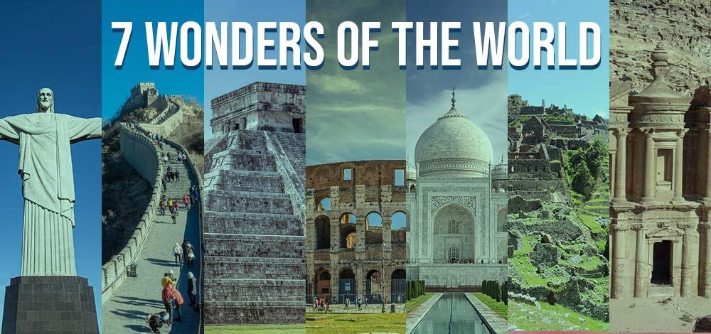

Seven Wonders of the world
| Wonder | Date of construction | Location |
|---|---|---|

The New Seven Wonders of the World is a contemporary list of remarkable architectural and historical sites, as determined by a global poll conducted by the New7Wonders Foundation. The list was announced on July 7, 2007. Here's a summary of the New Seven Wonders of the World:
- Great Wall of China
-
Constructed over centuries to protect China from invasions, the Great Wall stretches over 13,000 miles (21,196 kilometers) across northern China. It's an enduring symbol of Chinese civilization and a testament to human ingenuity.
- Petra, Jordan
-
An ancient city carved into the rose-red cliffs of southern Jordan, Petra was the capital of the Nabatean Kingdom around 300 BCE. Its stunning rock-cut architecture and water conduit system reflect the ingenuity of its builders.
- Christ the Redeemer, Brazil
-
This iconic statue of Jesus Christ stands atop the Corcovado mountain overlooking Rio de Janeiro, Brazil. Completed in 1931, it's become a symbol of Christianity and a popular tourist attraction.
- Machu Picchu, Peru
-
Built by the Inca civilization around the 15th century, Machu Picchu is a breathtaking archaeological site nestled high in the Andes Mountains of Peru. Its terraces, temples, and stone structures showcase the advanced engineering skills of the Inca.
- Chichen Itza, Mexico
-
A pre-Columbian archaeological site in Yucatan, Mexico, Chichen Itza was a major city of the Maya civilization. Its most famous structure is the Temple of Kukulcan (El Castillo), known for its precise astronomical alignments and impressive architecture.
- Roman Colosseum, Italy
-
A symbol of the ancient Roman Empire, the Colosseum is an elliptical amphitheater located in the center of Rome, Italy. It was used for gladiatorial contests and public spectacles, accommodating tens of thousands of spectators.
- Taj Mahal, India
-
Built by the Mughal emperor Shah Jahan in memory of his wife Mumtaz Mahal, the Taj Mahal is a stunning white marble mausoleum located in Agra, India. Completed in 1653, it's considered one of the most beautiful buildings in the world and a UNESCO World Heritage Site.